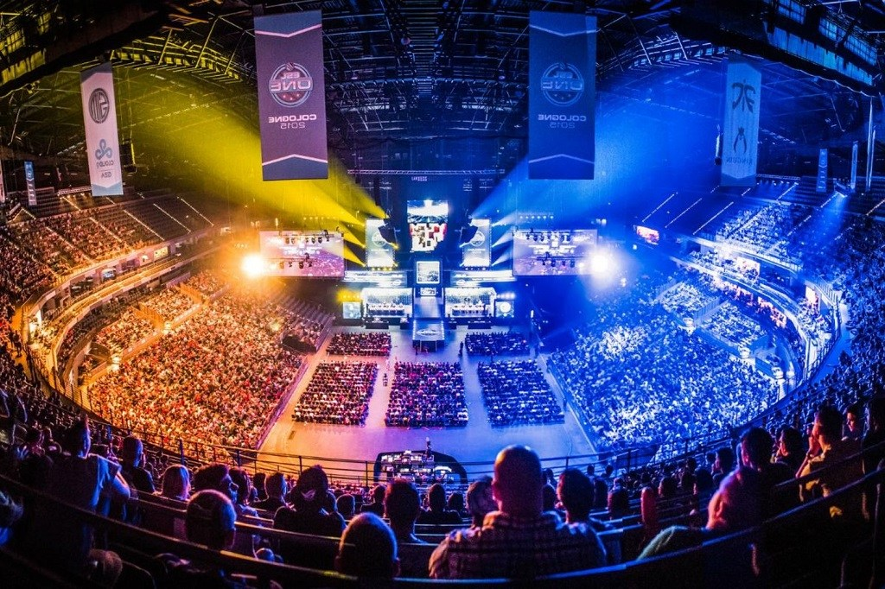
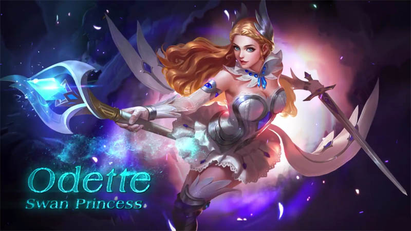

BERITA GAME
Mage User di Mobile Legends? Dapatkan Banyak Kill dengan Build Item Odette Ini!
Odette, sang Swan Princess merupakan salah satu hero mage dengan range area yang cukup luas meskipun ia sudah di-nerf. Magical damage dari Odette terasa sangat sakit apalagi jika sudah memasuki late game. Yuk kita cek guide build item Odette di artikel ini! Read More
Empat Karakter Kura-Kura Ninja Siap Tarung di Injustice 2

Injustice 2 dipastikan akan kedatangan karakter anyar lewat downloadble content (DLC) terbaru yang siap rilis. Tak tanggung-tanggung, kali ini pemain akan kedatangan empat karakter dari Teenage Mutant Ninja Turtle. Read More